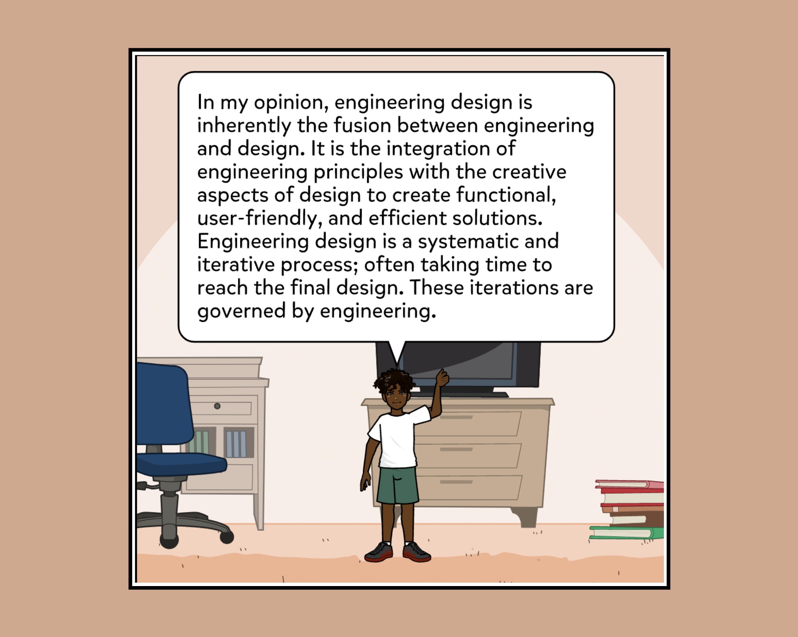
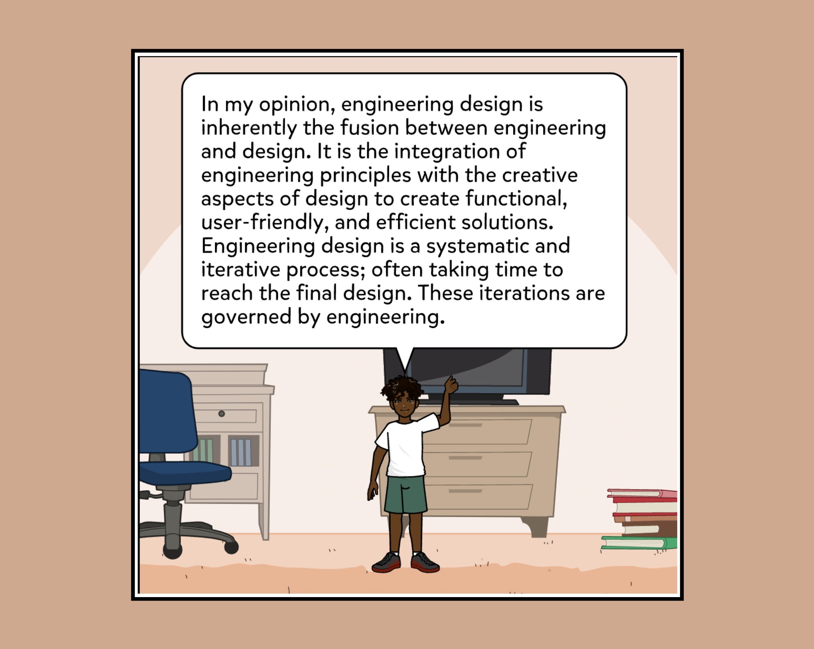
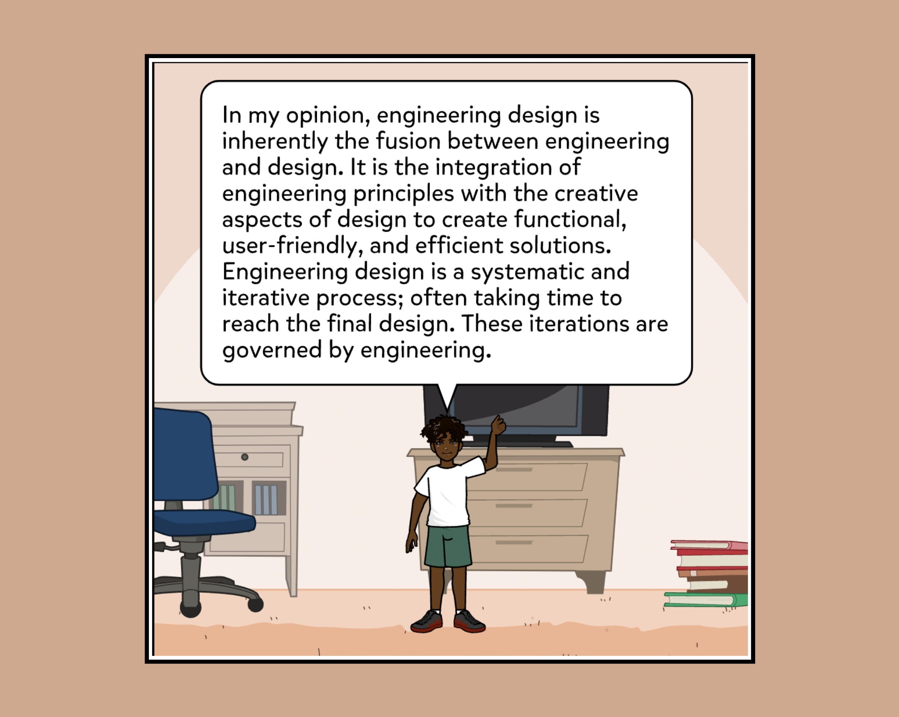

ESC102 | Chandresh Balakrishnan

The Splartz is a dynamic chair-stabilization platform designed to eliminate chair wobbling caused by uneven leg lengths, a common issue in student study environments. Aimed at enhancing comfort and usability in public academic spaces, Splartz targets square-legged chairs and incorporates an elastic air chamber that automatically adjusts to compensate for discrepancies between 1.25 mm and 12 mm. This passive adjustment system ensures that the platform dynamically conforms to uneven surfaces based on the user's weight distribution, delivering immediate and intuitive stabilization without requiring fixed installation or manual calibration.
From a design standpoint, Splartz balances portability with robust performance. It supports weights up to 150 kg, making it suitable for a wide range of users and furniture types. A key feature of the design is the use of a gyroid infill structure, chosen for its near-isotropic strength properties and superior material efficiency. This internal structure reduces material use while maintaining strength under load, optimizing the product for both cost-effective production and environmental sustainability. The form factor was also minimized by reducing platform height, which helped lower the center of gravity and enhanced overall stability. Safety was another critical focus; Splartz integrates rounded edges and recessed interfaces in compliance with NSPIRE safety standards, eliminating puncture or snag risks for users.
The final concept was selected through rigorous evaluation using structured decision-making frameworks such as Pugh charts and measurement matrices, which helped the team converge on the air pump platform from among several competing designs. These tools allowed the team to analyze alternatives against core criteria including weight support, usability, safety, and correction accuracy. Splartz ultimately demonstrated a 98% success rate in leveling performance tests, affirming the effectiveness of the selected concept. Through a design process rooted in empirical testing, iterative development, and thoughtful prioritization of user needs, the team produced a solution that is not only technically sound but also practical and accessible for deployment in real-world academic settings.

Integrating the NSPIRE safety standard (Figure 1) into our design process deepened my understanding of the framing phase of engineering. Framing involves defining what matters in a design — the problem, the goals, and the constraints. Initially, I thought of our project mainly in terms of stability and function. However, when we applied NSPIRE, our framing shifted: user safety became a priority. This required us to go beyond aesthetics and functionality to ensure we were addressing real-world risks like sharp edges and potential injuries.
With this new framing, we created specific requirements: no exposed screws, no sharp corners, and all structural elements must be either enclosed or cushioned. These constraints forced us to rethink what “good design” meant — not just something that works, but something that protects. The safety requirement influenced every design decision from that point forward, guiding both our material choices and structural layouts.
At first, I saw safety standards as a checklist item — something to deal with later. But framing our design around NSPIRE early on showed me how powerful these standards are in shaping initial thinking. They don’t just filter out bad ideas; they elevate the design by giving it purpose. We weren’t just building something functional — we were building something that met a professional expectation of responsibility.

Looking at existing glide designs (Figure 2), I saw how NSPIRE was applied in industry through subtle choices like rounded plastic, embedded fasteners, and covered metal ends. These examples helped me reframe our design more realistically. Rather than being restrictive, the safety framing gave our team a professional lens that connected our project to real engineering practice.
Overall, this experience showed me that framing isn’t just about narrowing down a problem — it’s about deciding what values to prioritize. Applying the NSPIRE standard reframed our entire outlook, helping us balance performance with user-centered design from the very beginning. Framing our project through the lens of the NSPIRE standard proved highly effective in shaping a clear, user-centered foundation that guided every design decision with purpose and responsibility.
Using the Lotus method (Figure 3) fundamentally shaped how I approach the divergence phase of engineering design. Divergence involves purposefully generating a wide range of ideas before evaluating or narrowing them down. Before this project, I often jumped to early conclusions and settled quickly on a “best” idea. However, the structured format of the Lotus method challenged me to slow down and fully explore the design space.

The method breaks down a central challenge into eight sub-problems and requires at least eight ideas per category. This forced our team to think deeply and broadly about the various aspects of our chair stabilizer, such as how to address load resistance, user ergonomics, ease of setup, and material performance. Generating over 60 unique ideas made me realize just how many possibilities can emerge when the goal is quantity over evaluation.
One insight I gained from this method was that divergent thinking is not random — it thrives on structure. Instead of loosely brainstorming, the Lotus grid kept us anchored in specific themes. For example, under the “adjustability” category, we proposed spring-loaded arms, telescoping legs, and modular inserts. Each of these had different benefits, and none of them would have come to mind if we hadn't purposefully stretched our thinking through the framework.
Another major learning was how collaboration expands divergence. The team setting meant each member offered ideas I wouldn't have generated alone — like a folding mechanism for portability or vibration-absorbing rubber composites for uneven ground. I learned that divergence works best when multiple perspectives are layered and built upon. Everyone’s contributions unlocked new sub-ideas, making the grid richer with each pass.
Prior to this, I thought of brainstorming as a quick, optional step. But using the Lotus method made divergence feel intentional, rigorous, and necessary. It prevented us from fixating on our first idea and pushed us to find better, more creative options. This experience helped me understand that divergence isn’t a warm-up — it’s a core engineering skill that leads to better design by ensuring we’ve explored enough to make informed decisions later. The Lotus method was extremely effective in helping our team diverge thoughtfully and creatively, resulting in a broad, well-organized pool of ideas that laid the groundwork for strong and innovative design solutions.
To make a reasoned and evidence-based design decision, our team employed a Measurement Matrix (Figure 4) as a convergence tool to compare the performance of each of our prototypes. This matrix was structured around six framing criteria that aligned directly with our project’s user needs and safety requirements — including weight support, risk of hazard, durability, and correction effectiveness. By doing this, we ensured the convergence process was not just a subjective selection but rather grounded in rigorous evaluation.

The strength of this tool lies in its ability to integrate the framing and convergence phases of the design process. The framing phase was critical to this CTMF’s success: we defined a clear set of criteria rooted in stakeholder needs and real-world constraints, such as NSPIRE safety compliance (no sharp edges), load-bearing performance (150+ kg), and portability. This front-end framing ensured the convergence process would be anchored to meaningful metrics rather than arbitrary preferences.
Through this matrix, we identified the Air Pump Platform as the optimal solution, which performed best across five out of six criteria. It provided high discrepancy correction (98%), the highest weight capacity (180 kg), full portability, and hazard-free edges. The Water-Filled Platform ranked closely behind, but was bulkier and risked maintenance issues. This comparative clarity would have been difficult to achieve without a structured convergence tool.
Moreover, the matrix allowed us to visually represent complex tradeoffs and communicate our rationale clearly to stakeholders, including our instructors and peers. Instead of simply declaring a design winner, we could justify our choice through empirical performance, which increased confidence in our decision and aligned our direction with our initial problem framing.
Some may critique the Measurement Matrix as overly rigid or susceptible to bias in how criteria are weighted or interpreted. However, in our context, it created clarity and alignment. Because our framing process was well-developed and criteria were stakeholder-driven, the matrix served as a transparent and highly effective tool for convergence. It encouraged rational thinking, reduced group conflict, and brought structure to a process that could otherwise be subjective.
Ultimately, integrating the Measurement Matrix as both a framing and convergence CTMF enhanced the professionalism and integrity of our design process. It enabled us to translate user needs into measurable goals, then systematically determine which design met those goals. This approach deepened my appreciation for structured engineering tools and reaffirmed the value of planning and analysis in design convergence.
Effectiveness: The Measurement Matrix was a highly effective CTMF in our design process, offering structured comparison, traceability of decision-making, and a clear link between user needs and final outcomes.
Praxis I fundamentally reshaped my understanding of engineering design by showing me that the process is far more than just building to meet technical function. Through our framing CTMF—using the NSPIRE safety standard—I realized that design begins by understanding the people and contexts our solutions serve. What once seemed like rigid constraints quickly became opportunities to align engineering goals with user well-being. Framing safety not just as a requirement, but as an integral part of the problem space, helped me recognize that good engineering must account for human needs from the outset—not as an afterthought.
As we moved into ideation, the Lotus Method expanded my perception of collaboration and creativity. Diverging using this method taught me that innovation emerges when diverse perspectives are brought into a structured environment. I used to think of ideation as a solo activity—brainstorming in a vacuum—but Praxis I showed me that designing with a team often leads to stronger, more versatile solutions. Seeing how our ideas evolved from individual insights into a well-rounded, multi-faceted concept highlighted the importance of shared creativity in the early phases of design.
Finally, our use of a Measurement Matrix to converge on a final concept showed me how critical objectivity and evaluation are in reaching design decisions. I’ve learned that effective engineering doesn’t rely solely on intuition or popularity—it’s driven by evidence, clear criteria, and iterative reflection. This systematic approach helped us choose the most balanced and realistic solution, reinforcing the importance of traceability in the design process. Altogether, Praxis I taught me to view engineering design as a thoughtful, user-centered, and team-driven practice grounded in ethical responsibility, critical thinking, and structured decision-making.
Brief overview of your Praxis I project’s vision and goals in a concise one-pager format.
Explain your first application of the CTMF model and how you began to navigate the design cycle.
Discuss how your understanding evolved and how iteration improved your approach.
Final reflections on the project, and how your work aligned with user needs and technical constraints.

Explain your first application of the CTMF model and how you began to navigate the design cycle.
Discuss how your understanding evolved and how iteration improved your approach.
In our Praxis II project, we used the Pugh Chart method (Figures 1–4) to guide the convergence phase and evaluate design alternatives with consistent, data-informed judgment. After generating a wide range of solutions during the divergent phase—including the Colour Scanner, Villi Probe, Sponge, and Claw—we needed a systematic method to compare them based on functional requirements like accuracy, number of steps, quantitative output, and corrosion resistance. The Pugh Chart provided a structured framework to organize this analysis, making it easier to draw meaningful comparisons across design options.
The most effective Pugh Chart used the Colour Scanner as the reference (Figure 1), since it was our baseline idea and had already been used in previous tests. This reference allowed us to objectively identify the advantages and drawbacks of each competing design. The chart revealed that the Colour Scanner consistently outperformed other options in areas like accuracy, minimal user steps, quantitative feedback, and corrosion durability. It became clear that, despite being a complex tool, it provided a reliable, portable, and scientifically robust way to collect soil data, especially when combined with improved scanning strategies.

The Pugh method was especially helpful during framing because it forced us to articulate and weight our evaluation criteria early in the process. We had to determine what attributes actually mattered in the context of field-based soil analysis: accuracy, user simplicity, corrosion resilience, and quantitative capability. This helped prevent us from selecting a design based on aesthetic appeal or subjective team preference. Instead, the Pugh Chart clarified which performance traits we prioritized and helped us frame our final selection accordingly.
Evaluating the effectiveness of this CTMF, it is clear that the Pugh Chart method provided an accessible yet powerful tool for converging toward the best design option. It balanced qualitative judgment with quantitative rationale, encouraged critical discussion, and offered a visual summary that all team members could easily interpret. In the future, I would absolutely use this CTMF again—especially in group settings—because it keeps ideation grounded while still enabling consensus. Overall, this approach deepened my appreciation for convergence as a structured, evidence-based process rather than an arbitrary decision point.
Explain your first application of the CTMF model and how you began to navigate the design cycle.
Discuss how your understanding evolved and how iteration improved your approach.